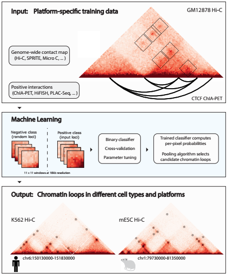
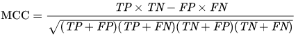
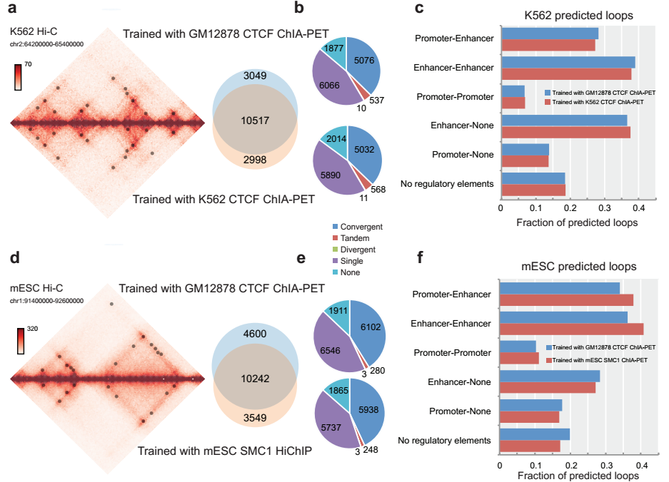

Hai-Tao Li
Ph.D. candidate ? BIOINFORMATICS

A supervised learning framework for chromatin loop detection in genome-wide contact maps
全基因组接触图中染色质环检测的有监督学习框架
摘要：从全基因组相互作用矩阵（例如Hi-C数据）准确预测染色质环对于我们加深对基因调控过程的理解至关重要。目前的算法主要集中于在全基因组范围中识别在统计上富集的点中，然而，考虑到其他数据的可用性，例如ChIAPET, GAM, SPRITE以及高通量数据影像等数据，有监督的学习方法可以促进发现全面的染色质相互作用。这里作者设计了一种名为Peakachu的算法，一种随机森林分类框架下通过全基因组三维数据预测染色质环。与传统算法相比，该算法能够识别更有意义的短距离相互作用，而且在不同的测序深度下都有较好的表现。作者将该算法应用于56个Hi-C数据中（其中包括脑部海马的数据）。
正训练集由从不同的测序技术（例如ChIA-PET，PLAC-Seq，Capture Hi-C，甚至是高分辨率成像数据）所识别的染色质环的区域。对于负训练集，从非正样本训练集中随机抽取相等数量的数据，其距离分布来自正样本的情况。负数集始终包含相似的基因组距离（类似于正样本训练集的接触矩阵形式），以及一组类似于接触矩阵固有噪声的远程接触。
一、算法介绍
Peakachu根据定义的阳性和阴性训练集建立循环分类模型：阳性集可以是来自生物富集实验（例如ChIAPET和HiChIP）或高通量成像实验（例如HiFISH）的任何类型的相互作用。
Peakachu算法的算法流程如下图所示：输入有两个部分。第一部分是全基因组相互作用矩阵，例如Hi-C或Micro-C数据。第二部分是构建正样本和负样本训练数据集。拟合Peakachu模型需要两个组成部分：1、bin为10kb的Hi-C数据矩阵；2、ChIA-PET相互作用区域文件。对于ChiA-PET中的每个交互信息，都会从Hi-C矩阵中提取以交互为中心的相应11x11窗口。中心交互值与该窗口左下象限数值（lower left quadrant）的比值用作训练之前的指标变量（称为P2LL），并且最低P2LL的值应当大于0.1。换句话说，就是染色质环的两个片段的相互作用的0.1倍应当大于环内片段的相互作用，才能作为染色质环的判断依据。根据以上规则收集正样本后，将收集的相应数量的具有随机坐标和非零中心的窗口，以定义为负样本。

图1 Peakachu算法流程示意图
每个样本被分解为243个特征的向量，其中前121个表示该窗口中的相互作用的值，后121个表示该窗口中相互作用强度的排序，最后一个特征则是P2LL的值。调用基于python中scikit-learn包，然后将训练集传递到3折交叉验证循环，以拟合100个决策树的随机森林。每棵决策树都接受15-20个特征的随机组合训练，所测试的超参数包括分割标准（熵或基尼系数），最大树深度和类权重。
MCC(Matthews correlation coefficient)作为筛选最佳参数的依据

可以将训练后的模型应用于与训练矩阵相同或相似深度的Hi-C接触矩阵中。
Peakachu为给定基因组跨度内的所有非零中心像素定义特征向量，并使用scikit-learn库提供的predict_proba方法对每个向量进行评分。通常，将得分较高的中心像素分组在一起，并且每个群集仅报告一个代表性像素。该中心像素所在的位置就确定为染色质环区域。
在后面的实验中，作者GM12878通过标准化得到Hi-C矩阵，并且作者通过GM12878的CTCF ChIA-PET和H3K27ac HiChIP数据，分别构建Peakachu模型。通过GM12878作为已知的训练集，以K562和小鼠胚胎干细胞mESC作为验证集，证明该算法的有效性。
首先，作者首先解释了为何使用CTCF ChIA-PET和H3K27ac HiChIP数据作为GM12878的相互作用数据作为建立模型的数据。通过作者的统计发现，CTCF和H3K27ac反应了不同基因组距离的染色质环。通过这两种数据，统计发现，H3K27ac HiChIP回路的75％（4,810 / 6,395）在250kb之内（如图2a），而只有8％（500 / 6,395）在500kb以上。相反，合并的CTCF ChIA-PET相互作用中有42％（23,420 / 55,222）是远程（>500kb），而只有34％是短程，小于250Kb。这与以前的观察结果一致，即CTCF负责长距离相互作用，并且它已被证明是环挤出模型和TAD形成的关键组成部分。于此同时，H3K27ac是活性增强子和启动子的组蛋白标记，因此富集H3K27ac的接触可能是启动子和增强子之间的短距离相互作用，它可能比CTCF环更具有动态性。因此，在后面的实验中，作者将首先CTCF ChIA-PET和H3K27ac HiChIP数据作为ChIA-PET相互作用列表（ChIA-PET interaction list），然后结合它们的结果以从Hi-C数据获得更全面的预测。
随后，作者利用Peakachu从Hi-C数据中准确捕获已知的相互作用。作者首先在相同细胞类型中使用来自CTCF ChIA-PET的92,807个已发表的染色质相互作用在GM12878 Hi-C数据中训练Peakachu模型。使用从其他染色体训练的模型分别预测每个染色体中的染色质环。在全基因组范围内，作者确定了13,360个染色体环。在预测的环中，51％的结合位点具有保守的CTCF结合motif，34％的结合位点在一个锚点上具有CTCF结合位点，9％的含有串联motif（如图2c所示）。29％的预测染色质环在一个锚点处包含启动子，在另一个锚点处包含增强子，而41％在两个锚点处均包含增强子（如图2b所示）。而后，作者以相似的统计方法，仅使用GM12878 H3K27ac HiChIP的6359个相互作用训练了该模型。通过分析结果，总共预测了Hi-C矩阵中的13,292个染色质环。有意思的是，大多数预测与使用CTCF训练的模型相同：其中65％与CTCF模型的64％预测完全匹配（13,292和13,360）。如果每个锚点允许两个bin的不匹配，则重叠率分别增加到69％和68％（9,109个H3K27ac与9,135个CTCF匹配）。启动子和增强子的富集也类似于CTCF ChIA-PET模型（图2b）：29％的预测染色质环在候选增强子和启动子之间，约41％在增强子和增强子之间。
然而，两种模型的预测存在差异，它们直观地反映了训练阳性数据中的差异：1）在H3K27ac HiChIP模型的预测中，我们观察到了更高比例的短程相互作用。 其中，53％（7,000 / 13,292）是短距离（小于 250kb），而14％超过500kb（图2a）。相反，CTCF模型的预测中只有36％（4,874 / 13,360）小于250kb，而25％（3,335 / 13,360）大于500kb（图2a）。这表明H3K27ac HiChIP模型可以识别更多的短程相互作用，而CTCF ChIA-PET模型则可以更好地识别远程染色质环。
因此，作者决定将合并的非冗余CTCF ChIA-PET和H3K27ac HiChIP数据构建预测模型，并应用于预测GM12878和所有其他细胞类型的染色质环。如下图的e和f可见，在GM12878数据集中，该模型具有较高的召回率和准确率。

图2 Hi-C的Peakachu框架应用于GM12878数据集中。(a) GM12878中CTCF ChIA-PET，H3K27ac HiChIP和HiCCUPS（Hi-C）相互作用的距离分布（上排）。用CTCF ChIA-PET或H3K27ac HiChIP数据训练后，根据Hi-C预测的Peakachu环的分布，以及两个预测的并集（下排）。首先将CTCF ChIA-PET中的交互作用合并，以使用Peakachu使用的相同算法来消除局部冗余。 (b) 具有不同调控元件组合预测染色质环区域的调控元件比例。 (c) CTCF绑定模式和Peakachu预测的APA分析。 (d) 由使用CTCF ChIA-PET或H3K27ac HiChIP实例训练的Peakachu模型预测的染色质环的重叠，以及由Peakachu和HiCCUPS从GM12878的Hi-C预测的相互作用的可视化。 (e) 在合并的Peakachu环捕获的正交实验中，GM12878相互作用的分数。 (f) 通过三折正交实验验证了Peakachu预测的分数。
最后，作者在一种细胞类型（GM12878）中训练过的Peakachu模型可以准确捕获其他细胞类型(K562和mESC)中的染色质环。为了测试在该模型中训练完成的模型是否可以应用于其他细胞类型，作者首先使用在GM12878 CTCF ChIA-PET中训练的模型来预测染色质环，而后预测K562和小鼠的胚胎干细胞中。在K562细胞系中，作者预测了13566个染色质环：其中37％（5,076 / 13,566）包含CTCF结合位点，另有41％（5,623 / 13,566）的两个锚都具有CTCF结合，另外还有45％（6,066个环）具有绑定在一个锚点上CTCF（图4b）。同样，作者预测了mESC中的14,842个环：其中41％（14,842个中的6,102个）的两个锚都具有CTCF结合，另外44％（14,842个中的6,546个）具有绑定在一个锚点上CTCF（图4e）。两组预测均包含至少80％的候选循环中的调控元素（如图4c和f所示）。其结果与CTCF实验测得的数据有很大的重合，且识别的染色质环具有生物学意义，因此从侧面可以看出改算法具有一定的实际意义。

在论文的后面，作者认为现在传统识别染色质环的算法与染色质环长度的定义有较为密切的关系，而对于染色质环的定义还没有确切的共识。因此，作者首先提出基于机器学习的方法，就能够避免这一问题的出现。